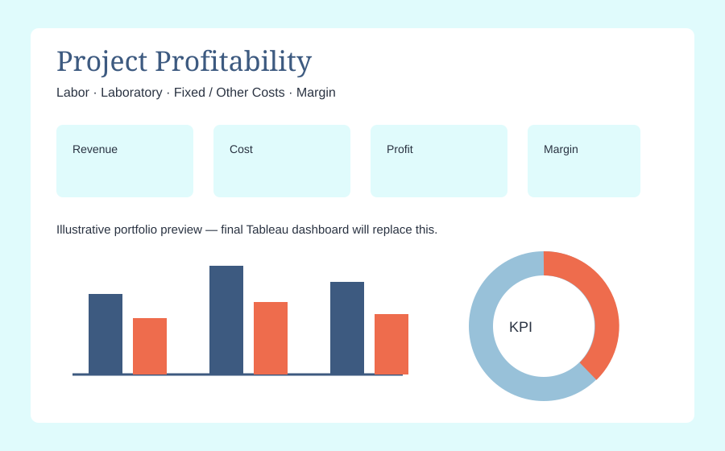

01
Hotel Booking Evaluation
I analyzed hotel booking patterns, cancellations, customer preferences, revenue impact, and data quality issues using Python, Excel, and Tableau.
A project about turning a messy dataset into an operational story.
I build data systems, investigate business questions, and create visual stories that make complex information easier to understand and use.

A production-style dimensional data warehouse built from real operational data. The project brings together payroll, laboratory, contracts, work authorizations, billing, and project information to answer questions about revenue, cost, and profitability.

These were capstone projects from my data analytics bootcamp. They were some of the first places I got to experience the full cycle of asking a question, working through data, building visuals, and telling a story.
I analyzed hotel booking patterns, cancellations, customer preferences, revenue impact, and data quality issues using Python, Excel, and Tableau.
A project about turning a messy dataset into an operational story.
I evaluated states, markets, products, sales, and profitability to identify a test market for a seasonal coffee product, then built the Tableau story around the evidence.
A project about market analysis, comparison, and making the numbers useful to a decision-maker.
Real business data isn't clean, conveniently shaped, or perfectly documented. The interesting work is understanding the business, understanding the data, and figuring out where those two things don't quite match.
Read the Article →“I kept solving real business problems until I accidentally wandered into analytics engineering.”
I'm a data analyst with a background in education and operations. I like messy data, complicated business questions, and the moment when a pile of disconnected records starts becoming a coherent model.
When I'm not working with data, I'm usually reading, walking, sewing, or being supervised by my two cats.
More About Me →